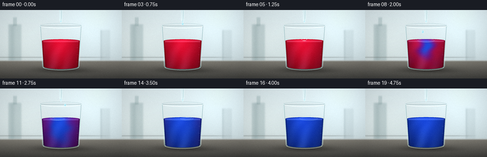
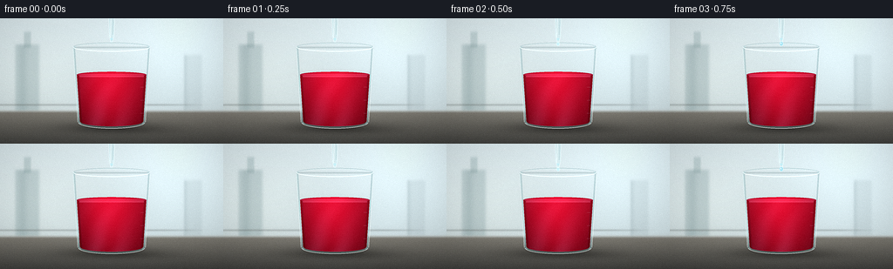
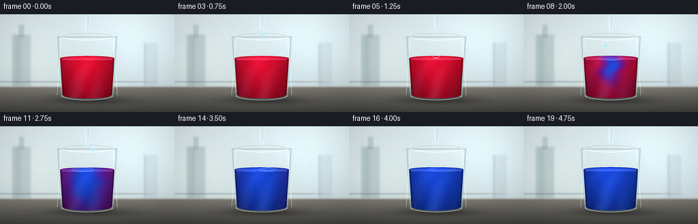

CODING AGENTS AS PIXEL WORLD MODELS
traex/DeepSeek-V4.1-Flash · material_0031
点击播放 · 原生 RGB 像素
逐轮保存的候选
回放视频、检查图与代码变化。
每份候选均可单独播放。实际图片检查记录在下方工具轨迹中。
候选 01播放与检查图
点击播放 · 原生 RGB 像素


展开代码变化
--- 上一保存版本
+++ 本次保存版本
@@ -0,0 +1,522 @@
+from pathlib import Path
+import json
+import math
+
+import numpy as np
+from PIL import Image, ImageDraw, ImageFilter
+
+import artifact_io
+
+
+ROOT = Path(__file__).resolve().parent
+SPEC = json.loads((ROOT / "task_spec.json").read_text())
+W = int(SPEC["width"])
+H = int(SPEC["height"])
+N = int(SPEC["frames"])
+FPS = float(SPEC["fps"])
+
+# Render above the delivery resolution so glass rims, droplets, and menisci
+# remain clean after the final downsample.
+SS = 4
+RW, RH = W * SS, H * SS
+
+CX = 128.0
+TOP = 32.5
+BOTTOM = 123.0
+
+
+def smoothstep(a, b, value):
+ x = np.clip((value - a) / (b - a), 0.0, 1.0)
+ return x * x * (3.0 - 2.0 * x)
+
+
+def lerp(a, b, amount):
+ return a + (b - a) * amount
+
+
+def mix_color(c0, c1, amount):
+ c0 = np.asarray(c0, dtype=np.float32)
+ c1 = np.asarray(c1, dtype=np.float32)
+ if np.ndim(amount) == 0:
+ return c0 * (1.0 - amount) + c1 * amount
+ return c0[None, None, :] * (1.0 - amount[..., None]) + c1[None, None, :] * amount[..., None]
+
+
+def composite(base, color, mask):
+ m = np.clip(mask, 0.0, 1.0)[..., None]
+ return base * (1.0 - m) + np.asarray(color, dtype=np.float32)[None, None, :] * m
+
+
+def screen(base, color, mask):
+ c = np.asarray(color, dtype=np.float32)[None, None, :]
+ m = np.clip(mask, 0.0, 1.0)[..., None]
+ return base + (1.0 - base) * c * m
+
+
+def outer_half(y):
+ return 38.2 + 6.0 * np.clip((BOTTOM - y) / (BOTTOM - TOP), 0.0, 1.0)
+
+
+def inner_half(y):
+ return np.maximum(0.0, outer_half(y) - 2.15)
+
+
+def ellipse_metric(x, y, cx, cy, rx, ry):
+ return ((x - cx) / rx) ** 2 + ((y - cy) / ry) ** 2
+
+
+def make_coordinates():
+ xs = (np.arange(RW, dtype=np.float32) + 0.5) / SS
+ ys = (np.arange(RH, dtype=np.float32) + 0.5) / SS
+ return np.meshgrid(xs, ys)
+
+
+def make_background(X, Y):
+ yn = np.clip(Y / H, 0.0, 1.0)
+ xn = np.clip(X / W, 0.0, 1.0)
+
+ top = np.array([0.80, 0.84, 0.85], dtype=np.float32)
+ mid = np.array([0.72, 0.77, 0.78], dtype=np.float32)
+ rgb = top[None, None, :] * (1.0 - yn[..., None]) + mid[None, None, :] * yn[..., None]
+
+ # A broad, cool window reflection keeps the laboratory backdrop from
+ # reading as a flat color field.
+ window = np.exp(-((X - 205.0) / 72.0) ** 2 - ((Y - 32.0) / 75.0) ** 2)
+ rgb += window[..., None] * np.array([0.055, 0.065, 0.070], dtype=np.float32)
+ warm = np.exp(-((X - 42.0) / 80.0) ** 2 - ((Y - 75.0) / 55.0) ** 2)
+ rgb += warm[..., None] * np.array([0.035, 0.025, 0.012], dtype=np.float32)
+
+ # Soft, out-of-focus glassware on the rear bench.
+ bottle_a = (
+ smoothstep(15.0, 20.0, X)
+ * (1.0 - smoothstep(42.0, 48.0, X))
+ * smoothstep(27.0, 33.0, Y)
+ * (1.0 - smoothstep(104.0, 110.0, Y))
+ )
+ bottle_a *= 0.18 + 0.08 * np.exp(-((X - 26.0) / 5.0) ** 2)
+ rgb = composite(rgb, np.array([0.31, 0.46, 0.48], dtype=np.float32), bottle_a)
+
+ neck = (
+ smoothstep(26.0, 29.0, X)
+ * (1.0 - smoothstep(34.0, 37.0, X))
+ * smoothstep(13.0, 18.0, Y)
+ * (1.0 - smoothstep(31.0, 36.0, Y))
+ )
+ rgb = composite(rgb, np.array([0.36, 0.50, 0.51], dtype=np.float32), neck * 0.20)
+
+ cylinder = (
+ smoothstep(209.0, 213.0, X)
+ * (1.0 - smoothstep(229.0, 234.0, X))
+ * smoothstep(39.0, 45.0, Y)
+ * (1.0 - smoothstep(103.0, 110.0, Y))
+ )
+ cylinder *= 0.12 + 0.12 * np.exp(-((X - 212.0) / 3.0) ** 2)
+ rgb = composite(rgb, np.array([0.48, 0.56, 0.58], dtype=np.float32), cylinder)
+
+ shelf = np.exp(-((Y - 99.5) / 1.2) ** 2) * (1.0 - smoothstep(180.0, 250.0, X))
+ rgb = composite(rgb, np.array([0.38, 0.40, 0.39], dtype=np.float32), shelf * 0.28)
+
+ # Brushed counter with a bright front lip and a darker recessed edge.
+ counter = smoothstep(104.0, 109.5, Y)
+ depth = np.clip((Y - 106.0) / 38.0, 0.0, 1.0)
+ counter_col = (
+ np.array([0.49, 0.48, 0.45], dtype=np.float32)[None, None, :] * (1.0 - depth[..., None])
+ + np.array([0.25, 0.25, 0.24], dtype=np.float32)[None, None, :] * depth[..., None]
+ )
+ rgb = rgb * (1.0 - counter[..., None]) + counter_col * counter[..., None]
+
+ lip = np.exp(-((Y - 106.0) / 1.25) ** 2)
+ rgb = screen(rgb, np.array([0.17, 0.18, 0.17], dtype=np.float32), lip * 0.5)
+
+ # Faint horizontal bench grain.
+ grain = (0.5 + 0.5 * np.sin(Y * 3.2 + 0.7 * np.sin(X * 0.17))) * counter
+ rgb += grain[..., None] * np.array([0.012, 0.011, 0.009], dtype=np.float32)
+
+ # Beaker contact shadow and its softer cast shadow.
+ shadow = np.exp(-((X - 128.0) / 52.0) ** 2 - ((Y - 125.0) / 6.0) ** 2)
+ rgb *= 1.0 - 0.33 * shadow[..., None]
+ cast = np.exp(-((X - 142.0) / 57.0) ** 2 - ((Y - 128.5) / 4.0) ** 2)
+ rgb *= 1.0 - 0.14 * cast[..., None]
+
+ return np.clip(rgb, 0.0, 1.0)
+
+
+def beaker_masks(X, Y):
+ half = outer_half(Y)
+ side = (Y >= TOP) & (Y <= 119.5) & (np.abs(X - CX) <= half)
+ bottom = (Y >= 116.0) & (ellipse_metric(X, Y, CX, 119.5, 38.2, 7.1) <= 1.0)
+ outer = side | bottom
+
+ ihalf = inner_half(Y)
+ inner_side = (Y >= TOP + 2.0) & (Y <= 119.0) & (np.abs(X - CX) <= ihalf)
+ inner_bottom = (Y >= 116.0) & (ellipse_metric(X, Y, CX, 119.0, 35.8, 5.2) <= 1.0)
+ inner = inner_side | inner_bottom
+ wall = outer & ~inner
+ return outer, inner, wall
+
+
+def drop_schedule():
+ # Detach, impact time, and lateral landing position. The three additions
+ # make the alkaline front read as a short laboratory timelapse.
+ return [
+ (0.70, 1.23, 128.0),
+ (1.62, 2.18, 121.0),
+ (2.54, 3.10, 137.0),
+ ]
+
+
+def liquid_surface_y(t):
+ return 64.6 - 1.25 * smoothstep(0.55, 4.6, t)
+
+
+def reaction_field(X, Y, t, surface_y):
+ # Slow global neutralization plus three localized plumes. The plume
+ # coordinates curl as they sink, suggesting mixing without particle noise.
+ base = 0.985 * smoothstep(1.12, 4.48, t)
+ field = base
+ for _, impact, x0 in drop_schedule():
+ age = t - impact
+ if age <= 0.0:
+ continue
+ depth = 7.0 + 20.0 * age
+ width = 5.5 + 11.5 * age
+ center_y = surface_y + 4.5 + 11.0 * age
+ bend = 3.8 * np.sin(0.19 * (Y - surface_y) - 2.5 * age + 0.8 * x0)
+ px = X - x0 - bend * np.exp(-((Y - center_y) / 20.0) ** 2)
+ plume = np.exp(-(px / width) ** 2 - ((Y - center_y) / depth) ** 2)
+ plume *= np.clip(age / 0.22, 0.0, 1.0)
+ field = field + 0.92 * plume * (1.0 - field)
+
+ # Fine, low-frequency fingers keep the advancing front from looking like
+ # a simple radial gradient.
+ fingers = (
+ np.sin(0.13 * Y + 0.10 * X + 1.7 * t)
+ + 0.55 * np.sin(0.21 * Y - 0.16 * X - 2.3 * t)
+ + 0.30 * np.sin(0.31 * Y + 0.23 * X + 4.1 * t)
+ ) / 1.85
+ field += 0.035 * fingers * smoothstep(0.9, 1.5, t) * (1.0 - base)
+ return np.clip(field, 0.0, 1.0)
+
+
+def render_liquid(X, Y, t, inner, surface_y):
+ rx = inner_half(surface_y) - 0.45
+ surface = ellipse_metric(X, Y, CX, surface_y, rx, 3.25) <= 1.0
+ body = (Y >= surface_y) & inner
+ mask = (body | surface) & (Y <= 124.2)
+
+ field = reaction_field(X, Y, t, surface_y)
+ red = np.array([0.77, 0.065, 0.18], dtype=np.float32)
+ violet = np.array([0.40, 0.10, 0.52], dtype=np.float32)
+ blue = np.array([0.10, 0.25, 0.73], dtype=np.float32)
+ lower = smoothstep(0.0, 0.58, field)
+ upper = smoothstep(0.42, 1.0, field)
+ color = red[None, None, :] * (1.0 - lower[..., None]) + violet[None, None, :] * lower[..., None]
+ color = color * (1.0 - upper[..., None]) + blue[None, None, :] * upper[..., None]
+
+ # Volumetric shading: brighter through the center, darker at the floor
+ # and walls, with a slight warm reflection on the left.
+ nx = np.clip(np.abs(X - CX) / (inner_half(Y) + 0.001), 0.0, 1.0)
+ depth = np.clip((Y - surface_y) / (BOTTOM - surface_y), 0.0, 1.0)
+ side_shade = 1.0 - 0.25 * nx**1.8
+ vertical = 1.08 - 0.36 * depth**1.3
+ center_light = 1.0 + 0.10 * np.exp(-((X - 123.0) / 24.0) ** 2 - ((Y - 82.0) / 37.0) ** 2)
+ color *= (side_shade * vertical * center_light)[..., None]
+
+ # Refracted caustics and a faint internal meniscus glow.
+ caustic = (
+ 0.5
+ + 0.5 * np.sin(0.19 * X + 0.11 * Y + 2.4 * t + 0.8 * np.sin(Y * 0.09))
+ )
+ caustic *= np.exp(-((X - 121.0) / 30.0) ** 2) * (0.20 + 0.80 * depth)
+ color += caustic[..., None] * np.array([0.06, 0.08, 0.10], dtype=np.float32)
+
+ edge = np.exp(-((np.abs(X - CX) - (inner_half(Y) - 1.4)) / 1.25) ** 2)
+ color *= 1.0 - 0.18 * edge[..., None]
+
+ surface_band = np.exp(-((Y - surface_y - 0.2) / 1.0) ** 2) * surface
+ color += surface_band[..., None] * np.array([0.12, 0.11, 0.14], dtype=np.float32)
+
+ front_rim = (
+ np.exp(-((Y - (surface_y + 2.2)) / 0.7) ** 2)
+ * (np.abs(X - CX) < rx * 0.94)
+ )
+ color += front_rim[..., None] * np.array([0.15, 0.17, 0.20], dtype=np.float32)
+ return color, mask, field
+
+
+def add_glass(rgb, X, Y, outer, inner, wall):
+ # The wall is a low-opacity cool glass layer with stronger Fresnel edges.
+ half = outer_half(Y)
+ edge_distance = np.minimum(
+ np.abs(np.abs(X - CX) - half),
+ np.abs(np.abs(X - CX) - inner_half(Y)),
+ )
+ fresnel = np.exp(-(edge_distance / 1.15) ** 2)
+ glass_alpha = np.where(wall, 0.12 + 0.34 * fresnel, 0.0)
+ glass_col = np.array([0.68, 0.84, 0.86], dtype=np.float32)
+ rgb = rgb * (1.0 - glass_alpha[..., None]) + glass_col[None, None, :] * glass_alpha[..., None]
+
+ # Cool reflected window on the left and a thin warm bounce on the right.
+ left_strip = (
+ wall
+ * np.exp(-((X - 89.0) / 1.5) ** 2)
+ * smoothstep(39.0, 49.0, Y)
+ * (1.0 - smoothstep(112.0, 122.0, Y))
+ )
+ rgb = screen(rgb, np.array([0.35, 0.47, 0.49], dtype=np.float32), left_strip * 0.65)
+ right_strip = (
+ wall
+ * np.exp(-((X - 166.0) / 1.35) ** 2)
+ * smoothstep(38.0, 48.0, Y)
+ * (1.0 - smoothstep(114.0, 122.0, Y))
+ )
+ rgb = screen(rgb, np.array([0.30, 0.37, 0.38], dtype=np.float32), right_strip * 0.52)
+
+ # A subtle green-blue thickness at the lower glass.
+ lower = wall * smoothstep(107.0, 121.0, Y)
+ rgb = composite(rgb, np.array([0.31, 0.47, 0.48], dtype=np.float32), lower * 0.10)
+ return np.clip(rgb, 0.0, 1.0)
+
+
+def overlay_image(base, overlay, opacity=1.0):
+ out = Image.alpha_composite(base.convert("RGBA"), overlay)
+ if opacity < 1.0:
+ out = Image.blend(base.convert("RGBA"), out, opacity)
+ return out
+
+
+def draw_beaker_vectors(base, t):
+ overlay = Image.new("RGBA", (RW, RH), (0, 0, 0, 0))
+ draw = ImageDraw.Draw(overlay)
+ s = SS
+
+ # Top lip: a double elliptical line reads as thick transparent glass.
+ cx, cy = CX * s, 33.1 * s
+ rx, ry = 44.1 * s, 5.0 * s
+ draw.ellipse((cx - rx, cy - ry, cx + rx, cy + ry), outline=(221, 239, 240, 100), width=max(1, int(1.25 * s)))
+ draw.ellipse((cx - rx, cy - ry, cx + rx, cy + ry), outline=(247, 252, 252, 185), width=max(1, int(0.52 * s)))
+ draw.arc(
+ (cx - rx, cy - ry, cx + rx, cy + ry),
+ 8,
+ 172,
+ fill=(255, 255, 250, 225),
+ width=max(1, int(0.62 * s)),
+ )
+ draw.arc(
+ (cx - rx, cy - ry, cx + rx, cy + ry),
+ 190,
+ 350,
+ fill=(89, 124, 130, 105),
+ width=max(1, int(0.55 * s)),
+ )
+
+ # Side contours and the thick, rounded base.
+ left_top = (84.1, 35.0)
+ right_top = (171.9, 35.0)
+ left_bottom = (89.2, 119.0)
+ right_bottom = (166.8, 119.0)
+ draw.line(
+ (left_top[0] * s, left_top[1] * s, left_bottom[0] * s, left_bottom[1] * s),
+ fill=(229, 245, 245, 118),
+ width=max(1, int(0.85 * s)),
+ )
+ draw.line(
+ (right_top[0] * s, right_top[1] * s, right_bottom[0] * s, right_bottom[1] * s),
+ fill=(246, 251, 250, 120),
+ width=max(1, int(0.82 * s)),
+ )
+ draw.arc(
+ ((CX - 38.3) * s, (119.5 - 7.0) * s, (CX + 38.3) * s, (119.5 + 7.0) * s),
+ 5,
+ 175,
+ fill=(238, 249, 248, 160),
+ width=max(1, int(0.9 * s)),
+ )
+ draw.arc(
+ ((CX - 35.8) * s, (119.0 - 5.3) * s, (CX + 35.8) * s, (119.0 + 5.3) * s),
+ 10,
+ 170,
+ fill=(95, 127, 129, 110),
+ width=max(1, int(0.55 * s)),
+ )
+
+ # Etched graduation marks.
+ for y in (79.0, 94.0, 109.0):
+ draw.line(
+ (161.0 * s, y * s, 165.2 * s, y * s),
+ fill=(224, 239, 238, 82),
+ width=max(1, int(0.45 * s)),
+ )
+
+ return overlay_image(base, overlay)
+
+
+def draw_pipette(base, t, surface_y):
+ overlay = Image.new("RGBA", (RW, RH), (0, 0, 0, 0))
+ draw = ImageDraw.Draw(overlay)
+ s = SS
+
+ # Glass Pasteur pipette, fixed just above the liquid surface.
+ body = [(124.7, -4.0), (131.3, -4.0), (130.5, 20.0), (128.9, 27.3), (127.1, 27.3), (125.5, 20.0)]
+ body_px = [(x * s, y * s) for x, y in body]
+ draw.polygon(body_px, fill=(176, 216, 222, 62))
+ draw.line(body_px + [body_px[0]], fill=(230, 246, 246, 175), width=max(1, int(0.72 * s)))
+ draw.line((127.1 * s, 0, 126.4 * s, 22.0 * s), fill=(255, 255, 255, 155), width=max(1, int(0.52 * s)))
+ draw.line((129.8 * s, 2.0 * s, 129.3 * s, 18.5 * s), fill=(78, 119, 127, 105), width=max(1, int(0.44 * s)))
+ draw.ellipse((124.6 * s, 19.5 * s, 131.3 * s, 22.2 * s), outline=(208, 229, 230, 135), width=max(1, int(0.42 * s)))
+
+ # A small meniscus of NaOH inside the tip.
+ draw.ellipse((126.3 * s, 22.5 * s, 129.6 * s, 25.1 * s), fill=(173, 220, 230, 145))
+
+ # Rubber bulb is cropped by the top edge, but its shoulders are visible.
+ bulb = [(117.4, -22.0), (138.6, -22.0), (138.0, -7.0), (135.4, -1.2), (120.6, -1.2), (118.0, -7.0)]
+ bulb_px = [(x * s, y * s) for x, y in bulb]
+ draw.polygon(bulb_px, fill=(70, 91, 101, 230))
+ draw.line(
+ [(119.0 * s, -9.0 * s), (120.4 * s, -3.0 * s), (134.9 * s, -3.0 * s), (136.5 * s, -10.0 * s)],
+ fill=(145, 170, 178, 145),
+ width=max(1, int(0.72 * s)),
+ )
+ draw.line((121.0 * s, -15.0 * s, 121.7 * s, -5.5 * s), fill=(169, 192, 199, 120), width=max(1, int(0.6 * s)))
+
+ # Bead and falling droplets.
+ tip_y = 28.4
+ for detach, impact, x0 in drop_schedule():
+ if detach - 0.30 <= t < detach:
+ u = np.clip((t - (detach - 0.30)) / 0.30, 0.0, 1.0)
+ r = 1.4 + 1.5 * smoothstep(0.0, 1.0, u)
+ cy = tip_y + 0.9 + 0.8 * u
+ draw.ellipse(
+ ((x0 - r) * s, (cy - r * 1.25) * s, (x0 + r) * s, (cy + r * 1.25) * s),
+ fill=(187, 228, 236, 155),
+ outline=(242, 252, 252, 180),
+ width=max(1, int(0.4 * s)),
+ )
+ elif detach <= t < impact:
+ u = (t - detach) / (impact - detach)
+ cy = tip_y + (surface_y - 0.8 - tip_y) * (0.18 * u + 0.82 * u * u)
+ r = 2.0 + 0.45 * u
+ draw.ellipse(
+ ((x0 - r) * s, (cy - r * 1.28) * s, (x0 + r) * s, (cy + r * 1.28) * s),
+ fill=(150, 211, 226, 190),
+ outline=(238, 252, 252, 225),
+ width=max(1, int(0.45 * s)),
+ )
+ draw.ellipse(
+ ((x0 - 0.8) * s, (cy - 1.15) * s, (x0 - 0.1) * s, (cy - 0.25) * s),
+ fill=(255, 255, 255, 205),
+ )
+ return overlay_image(base, overlay)
+
+
+def draw_ripples(base, t, surface_y):
+ overlay = Image.new("RGBA", (RW, RH), (0, 0, 0, 0))
+ draw = ImageDraw.Draw(overlay)
+ s = SS
+ for _, impact, x0 in drop_schedule():
+ age = t - impact
+ if age < 0.0 or age > 1.75:
+ continue
+ for delay, strength in ((0.0, 1.0), (0.20, 0.58), (0.42, 0.32)):
+ a = age - delay
+ if a <= 0.0:
+ continue
+ rx = 3.5 + 20.5 * (1.0 - math.exp(-1.65 * a))
+ ry = 0.75 + 4.2 * (1.0 - math.exp(-1.65 * a))
+ alpha = int(155 * strength * max(0.0, 1.0 - a / 1.35))
+ if alpha <= 0:
+ continue
+ box = ((x0 - rx) * s, (surface_y - ry) * s, (x0 + rx) * s, (surface_y + ry) * s)
+ draw.ellipse(box, outline=(213, 246, 247, alpha), width=max(1, int(0.55 * s)))
+ # The impact dimple and a few tiny splash highlights.
+ if age < 0.34:
+ fade = 1.0 - age / 0.34
+ draw.ellipse(
+ ((x0 - 2.8) * s, (surface_y - 1.2) * s, (x0 + 2.8) * s, (surface_y + 1.2) * s),
+ fill=(223, 250, 250, int(100 * fade)),
+ )
+ for j, (dx, dy) in enumerate(((-5.5, -2.5), (4.7, -3.2), (0.2, -4.4))):
+ rr = 0.55 + 0.25 * j
+ draw.ellipse(
+ ((x0 + dx - rr) * s, (surface_y + dy - rr) * s, (x0 + dx + rr) * s, (surface_y + dy + rr) * s),
+ fill=(225, 249, 249, int(150 * fade)),
+ )
+ return overlay_image(base, overlay)
+
+
+def render_frame(t):
+ X, Y = make_coordinates()
+ rgb = make_background(X, Y)
+ outer, inner, wall = beaker_masks(X, Y)
+ surface_y = liquid_surface_y(t)
+
+ # A small dark meniscus shadow directly behind the liquid surface.
+ back_surface = ellipse_metric(X, Y, CX, surface_y + 0.7, inner_half(surface_y), 3.9) <= 1.0
+ rgb = composite(rgb, np.array([0.24, 0.16, 0.22], dtype=np.float32), back_surface * 0.10)
+
+ liquid, liquid_mask, _ = render_liquid(X, Y, t, inner, surface_y)
+ rgb = np.where(liquid_mask[..., None], liquid, rgb)
+ rgb = add_glass(rgb, X, Y, outer, inner, wall)
+
+ # Dark inner wall contact, just above the liquid line.
+ contact = wall & (Y < 119.5)
+ rgb *= 1.0 - 0.10 * contact[..., None]
+
+ base = Image.fromarray(np.clip(rgb * 255.0, 0.0, 255.0).astype(np.uint8), "RGB").convert("RGBA")
+ base = draw_beaker_vectors(base, t)
+ base = draw_pipette(base, t, surface_y)
+ base = draw_ripples(base, t, surface_y)
+
+ # Bloom from the bright glass and liquid meniscus.
+ small = base.convert("RGB").resize((W, H), Image.Resampling.LANCZOS)
+ arr = np.asarray(small, dtype=np.float32) / 255.0
+ luminance = 0.2126 * arr[..., 0] + 0.7152 * arr[..., 1] + 0.0722 * arr[..., 2]
+ bright = np.clip((luminance - 0.68) / 0.32, 0.0, 1.0)
+ glow_img = Image.fromarray((bright * 255.0).astype(np.uint8), "L").filter(ImageFilter.GaussianBlur(2.3))
+ glow = np.asarray(glow_img, dtype=np.float32) / 255.0
+ arr = arr + glow[..., None] * np.array([0.10, 0.13, 0.14], dtype=np.float32)
+
+ # Gentle contrast and a vignette keep attention on the beaker.
+ arr = np.clip((arr - 0.5) * 1.045 + 0.5, 0.0, 1.0)
+ yy = np.linspace(-1.0, 1.0, H, dtype=np.float32)[:, None]
+ xx = np.linspace(-1.0, 1.0, W, dtype=np.float32)[None, :]
+ vignette = 1.0 - 0.12 * np.clip((xx * xx * 0.55 + yy * yy * 0.45 - 0.16) / 0.84, 0.0, 1.0)
+ arr *= vignette[..., None]
+
+ # A very small deterministic grain avoids plastic-looking gradients.
+ rng = np.random.default_rng(9107 + int(round(t * 1000)))
+ grain = rng.normal(0.0, 0.006, size=(H, W, 1)).astype(np.float32)
+ arr = np.clip(arr + grain, 0.0, 1.0)
+ frame = Image.fromarray((arr * 255.0 + 0.5).astype(np.uint8), "RGB")
+ frame = frame.filter(ImageFilter.UnsharpMask(radius=1.0, percent=34, threshold=2))
+ return np.asarray(frame, dtype=np.uint8)
+
+
+def main():
+ frames = np.stack([render_frame(i / FPS) for i in range(N)], axis=0)
+ assert frames.shape == (N, H, W, 3), frames.shape
+ assert frames.dtype == np.uint8
+ artifact_io.save(frames, ROOT)
+
+ # A shareable video is useful for direct inspection; the contract's
+ # canonical representation remains pixels.npz plus the PNG frame set.
+ try:
+ import cv2
+
+ writer = cv2.VideoWriter(
+ str(ROOT / "video.mp4"),
+ cv2.VideoWriter_fourcc(*"mp4v"),
+ FPS,
+ (W, H),
+ )
+ if writer.isOpened():
+ for frame in frames:
+ writer.write(cv2.cvtColor(frame, cv2.COLOR_RGB2BGR))
+ writer.release()
+ except Exception as exc:
+ print(f"MP4 export skipped: {exc}")
+ print(f"Rendered {N} frames at {W}x{H}, {FPS:g} fps")
+
+
+if __name__ == "__main__":
+ main()
候选 02播放与检查图
点击播放 · 原生 RGB 像素

展开代码变化
--- 上一保存版本
+++ 本次保存版本
@@ -292,7 +292,7 @@
# Top lip: a double elliptical line reads as thick transparent glass.
cx, cy = CX * s, 33.1 * s
- rx, ry = 44.1 * s, 5.0 * s
+ rx, ry = 38.2 * s, 5.0 * s
draw.ellipse((cx - rx, cy - ry, cx + rx, cy + ry), outline=(221, 239, 240, 100), width=max(1, int(1.25 * s)))
draw.ellipse((cx - rx, cy - ry, cx + rx, cy + ry), outline=(247, 252, 252, 185), width=max(1, int(0.52 * s)))
draw.arc(
@@ -311,10 +311,10 @@
)
# Side contours and the thick, rounded base.
- left_top = (84.1, 35.0)
- right_top = (171.9, 35.0)
- left_bottom = (89.2, 119.0)
- right_bottom = (166.8, 119.0)
+ left_top = (89.8, 35.0)
+ right_top = (166.2, 35.0)
+ left_bottom = (83.9, 119.0)
+ right_bottom = (172.1, 119.0)
draw.line(
(left_top[0] * s, left_top[1] * s, left_bottom[0] * s, left_bottom[1] * s),
fill=(229, 245, 245, 118),
@@ -462,7 +462,7 @@
contact = wall & (Y < 119.5)
rgb *= 1.0 - 0.10 * contact[..., None]
- base = Image.fromarray(np.clip(rgb * 255.0, 0.0, 255.0).astype(np.uint8), "RGB").convert("RGBA")
+ base = Image.fromarray(np.clip(rgb * 255.0, 0.0, 255.0).astype(np.uint8)).convert("RGBA")
base = draw_beaker_vectors(base, t)
base = draw_pipette(base, t, surface_y)
base = draw_ripples(base, t, surface_y)
@@ -472,7 +472,7 @@
arr = np.asarray(small, dtype=np.float32) / 255.0
luminance = 0.2126 * arr[..., 0] + 0.7152 * arr[..., 1] + 0.0722 * arr[..., 2]
bright = np.clip((luminance - 0.68) / 0.32, 0.0, 1.0)
- glow_img = Image.fromarray((bright * 255.0).astype(np.uint8), "L").filter(ImageFilter.GaussianBlur(2.3))
+ glow_img = Image.fromarray((bright * 255.0).astype(np.uint8)).filter(ImageFilter.GaussianBlur(2.3))
glow = np.asarray(glow_img, dtype=np.float32) / 255.0
arr = arr + glow[..., None] * np.array([0.10, 0.13, 0.14], dtype=np.float32)
@@ -487,7 +487,7 @@
rng = np.random.default_rng(9107 + int(round(t * 1000)))
grain = rng.normal(0.0, 0.006, size=(H, W, 1)).astype(np.float32)
arr = np.clip(arr + grain, 0.0, 1.0)
- frame = Image.fromarray((arr * 255.0 + 0.5).astype(np.uint8), "RGB")
+ frame = Image.fromarray((arr * 255.0 + 0.5).astype(np.uint8))
frame = frame.filter(ImageFilter.UnsharpMask(radius=1.0, percent=34, threshold=2))
return np.asarray(frame, dtype=np.uint8)
可观测工具轨迹
实际执行的命令与返回图片。
命令 1exit 0
/bin/bash -c "pwd && rg --files -g '"'!**/.git/**'"' | sed -n '1,200p'"
命令 2exit 0
/bin/bash -c "sed -n '1,240p' prompt.txt"
命令 3exit 0
/bin/bash -c "sed -n '1,300p' GENERATION_RULES.md"
命令 4exit 0
/bin/bash -c 'cat task_spec.json'
命令 5exit 0
/bin/bash -c "sed -n '1,260p' artifact_io.py"
命令 6exit 0
/bin/bash -c "sed -n '1,260p' player_template.html"
命令 7exit 0
/bin/bash -c "python - <<'PY' import sys mods=['numpy','PIL','cv2','matplotlib','scipy','imageio','torch','cairo'] print(sys.version) for m in mods: try: mod=__import__(m) print(m, getattr(mod,'__version__','ok')) except Exception as e: print(m,'NO',type(e).__name__,e) PY"
命令 8exit 0
/bin/bash -c 'command -v chafa || command -v viu || command -v jp2 || command -v img2txt || true'
命令 9exit 0
/bin/bash -c "fc-list | sed -n '1,30p'"
命令 10exit 0
/bin/bash -c 'python generate.py'
命令 11exit 127
/bin/bash -c 'ls -lh frames pixels.npz index.html video.mp4 inspection.png transition_check.png && ffprobe -v error -show_entries stream=codec_name,width,height,r_frame_rate,nb_frames,duration -of default=noprint_wrappers=1 video.mp4'
命令 12exit 0
/bin/bash -c "python - <<'PY'
from PIL import Image
im=Image.open('inspection.png'); print(im.size)
# 2x nearest enlargement for direct pixel inspection
im.resize((im.width*2,im.height*2),Image.Resampling.NEAREST).save('.tmp/inspection2x.png')
PY"命令 13exit 0
/bin/bash -c "python - <<'PY'
from PIL import Image
import numpy as np, glob
ims=[np.asarray(Image.open(p).convert('RGB')) for p in sorted(glob.glob('frames/*.png'))]
for i,a in enumerate(ims):
print(i, 'mean', np.round(a.mean((0,1)),1), 'std', round(float(a.std()),1), 'center', np.round(a[45:115,80:175].mean((0,1)),1))
print('unique pixels', len(np.unique(np.concatenate([a.reshape(-1,3) for a in ims]),axis=0)))
PY"命令 14exit 0
/bin/bash -c "python - <<'PY'
from PIL import Image,ImageOps,ImageDraw
ims=[Image.open(f'frames/{i:02d}.png').convert('RGB') for i in (0,5,10,15,19)]
out=Image.new('RGB',(W*5,H*2),(25,28,35)) if False else Image.new('RGB',(256*5,144*2+20),(25,28,35))
d=ImageDraw.Draw(out)
for j,(i,im) in enumerate(zip((0,5,10,15,19),ims)):
out.paste(im,(j*256,20)); d.text((j*256+4,4),f'{i:02d} {i/4:.2f}s',fill='white')
out.paste(im.resize((512,288),Image.Resampling.NEAREST).crop((128,40,384,328)).resize((256,144)),(j*256,164))
out.save('.tmp/keyframes.png')
# ascii luminance center crop 64x36
for idx in (0,10,19):
im=Image.open(f'frames/{idx:02d}.png').convert('L').resize((64,36),Image.Resampling.LANCZOS)
chars=' .:-=+*#%@'
print('\\nFRAME',idx)
for row in list(im.getdata()): pass
pix=list(im.getdata())
for y in range(36): print(''.join(chars[min(9,p*10//256)] for p in pix[y*64:(y+1)*64]))
PY"命令 15exit 0
/bin/bash -c "python - <<'PY'
import cv2, numpy as np
cap=cv2.VideoCapture('video.mp4')
frames=[]
while True:
ok,im=cap.read()
if not ok: break
frames.append(im)
cap.release()
print('mp4_read_frames',len(frames),'shape',frames[0].shape if frames else None,'fps',cap.get(cv2.CAP_PROP_FPS))
for i in [0,len(frames)//2,len(frames)-1]:
a=cv2.cvtColor(frames[i],cv2.COLOR_BGR2RGB)
print(i, 'mean', np.round(a.mean((0,1)),1))
PY"命令 16exit 0
/bin/bash -c 'python generate.py'
命令 17exit 0
/bin/bash -c "python - <<'PY'
from pathlib import Path
from PIL import Image
import numpy as np, json, py_compile
py_compile.compile('generate.py', doraise=True)
spec=json.loads(Path('task_spec.json').read_text())
z=np.load('pixels.npz')['pixels']
png=np.stack([np.asarray(Image.open(f'frames/{i:02d}.png').convert('RGB')) for i in range(spec['frames'])])
packed=(png[:,:,:,0].astype(np.uint32)<<16)|(png[:,:,:,1].astype(np.uint32)<<8)|png[:,:,:,2].astype(np.uint32)
print('npz', z.shape, z.dtype, 'png', png.shape, png.dtype)
print('npz_png_exact_match', np.array_equal(z, packed.transpose(1,2,0)))
diffs=np.abs(png[1:].astype(np.int16)-png[:-1].astype(np.int16))
print('consecutive_mean_abs_diff', np.round(diffs.mean((1,2,3)),2).tolist())
print('first_last_liquid_center_rgb', png[0,65:112,95:162].mean((0,1)).round(1).tolist(), png[-1,65:112,95:162].mean((0,1)).round(1).tolist())
html=Path('index.html').read_text()
print('player_ready', 'window.__pixelReady=true' in html, 'caption_present', 'sodium hydroxide' in html)
print('outputs', [(p.name,p.stat().st_size) for p in [Path('pixels.npz'),Path('video.mp4'),Path('inspection.png'),Path('index.html')]])
PY"保存候选 2 份；完成命令 17 次；可验证图片返回 0 张。原始 API 响应与完整日志保留在本地。